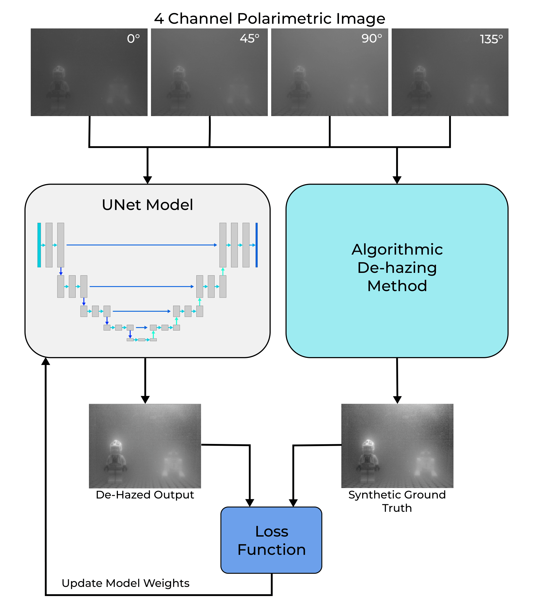
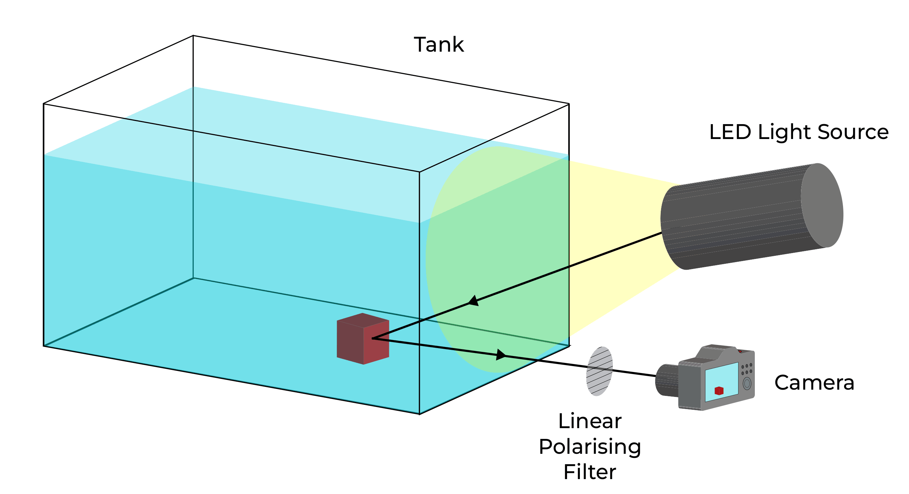

ML for Real-time Underwater Video Dehazing

Overview
My Masters thesis covered the development of CNNs to dehaze underwater video in real time, leveraging the polarisation properties of the scattered light to enhance image reconstruction. I built a small experimental imaging setup, captured a polarimetric dataset under controlled turbidity conditions, and used a physics-based dehazing method to generate synthetic clear images for supervised training without requiring paired real-world data.
The trained models significantly improved image quality across turbidity levels, improving the visible range by up to 44%. These quality enhancements led to improvements in stable freature tracking, where raw images completely failed. GPU inference ran at over 180 fps compared to the algorithmic 1.6 fps. This combined with the improvements in feature tracking demonstrate the methods potential for use in SLAM systems on AUVs in the field.
Why?
Underwater robotic systems are incredibly useful, but sophisticated operation of ROVs & AUVs around subsea infrastructure has, to date, still relied heavily on human pilots. Visual SLAM has shown promise as a route toward greater autonomy, however turbidity rapidly degrades image quality and makes reliable feature tracking extremely difficult. I wanted to investigate whether machine learning techniques could recover enough visual information to meaningfully improve SLAM performance in poor underwater conditions.
Why Polarisation?
When light is scattered underwater, its polarisation state is altered. This polarimetric behaviour encodes information about the path the light took before reaching the camera sensor, making it possible (although difficult) to separate haze from useful scene detail. Traditional polarimetric dehazing methods relied heavily on manual parameter estimation and were computationally expensive. More recent deep learning approaches improved reconstruction quality, but largely depended on supervised learning with paired datasets, something almost impossible to collect at scale in representative underwater environments.
My approach was to use an existing algorithmic dehazing method on hazy polarimetric images to generate a synthetic ‘clear’ ground truth for training. This broke the dependency on paired datasets entirely, creating a training pipeline that could realistically scale to real oceanic data and opening a credible path toward deployment on autonomous underwater vehicles.

Creating the Dataset
I built a small experimental imaging setup in the lab (my student bedroom), using a fish tank with varying concentrations of milk as a turbidifying agent to emulate underwater scattering. A range of objects, materials, and textures were imaged while rotating a linear polarising filter through 0°, 45°, 90° and 135° before rearranging the scene and repeating the process. Basic augmentation techniques were then applied to expand the dataset, producing a total of 1,440 four-channel polarimetric training images.

Results
Several lightweight UNet variants were trained using the synthetic paired dataset. Multiple loss functions were tested, including a 'hybrid' loss which combined pixelwise error with a structural similarity score. These models were tested on a series of benchmark scenes, containing objects not seen in the training data.

The reconstructed images showed a substantial improvement in contrast, edge definition, and fine detail across increasing turbidity levels. Features almost entirely obscured in the raw imagery became visible again, particularly around textured surfaces and object boundaries.

To quantify this, effective visibility was measured using the maximum identifiable range of benchmark markers within the scene. At the highest turbidity concentrations tested, the dehazed outputs improved effective visibility by up to 44%. The UNet trained with the hybrid loss function produced the best image reconstructions, with the full 'A - E' visible compare to the 'A, B' in the raw image.

To assess the dehazing imapct on potential SLAM system perfromance, ORB feature detectors were used to track keypoints between images as the turbidifying agent concentration increased. In heavily turbid scenes, the raw images often failed to retain stable features entirely, while the dehazed outputs recovered dozens of trackable keypoints.


Runtime performance was equally significant. Traditional algorithmic methods operated at roughly 1.6 Hz, while GPU accelerated neural inference achieved between 177-304 Hz on an Nvidia GTX1660-ti, comfortably exceeding the update rates required for real-time SLAM systems.